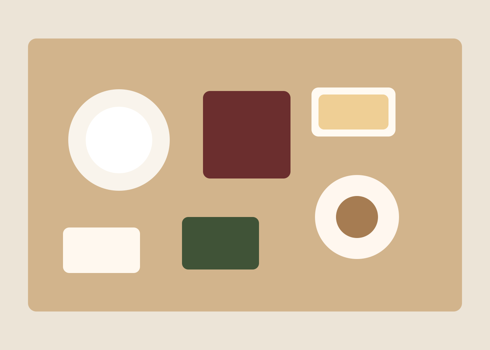

先付・前菜
春の若菜、胡麻豆腐、酢取り野菜。最初の一皿は、山里の気配をそのまま口に運ぶような軽やかさを大切にしています。
Cuisine
旅の記憶に残るのは、豪華さよりも、きちんと季節を感じられた食卓かもしれません。山灯りの宿では、地元の恵みを静かな流れでお出しします。

夕餉
春の若菜、胡麻豆腐、酢取り野菜。最初の一皿は、山里の気配をそのまま口に運ぶような軽やかさを大切にしています。
出汁の澄み方と香りを要に、地の魚や季節の野菜を組み合わせます。過度に手を加えず、素材の輪郭を残します。
川魚の塩焼き、飛騨牛の朴葉味噌焼き、含め煮など、その日の献立に応じて温かな皿を続けます。
土鍋炊きのご飯、香の物、止椀で締めくくり、最後は控えめな甘味を。食後の余韻まで静かに整えます。

朝餉
朝食は土鍋炊きのご飯、焼魚、出汁巻き玉子、湯豆腐、季節の小鉢を中心に。食べ終えるころに、身体がすっと整うような献立にしています。
食材としつらえ
山菜、きのこ、清流の魚、地場野菜を中心に、季節の旬を優先して仕入れています。
夕食は半個室の食事処または一部客室でご案内。静かに味わえる席間と照度を整えています。
地酒、山椒を使った自家製ソーダ、ほうじ茶など、料理に寄り添う飲み物を揃えています。
お食事について
重篤な症状を含む場合は3日前までにご連絡ください。内容確認のうえ、可能な範囲で対応いたします。
甘味の変更や祝い酒の手配も可能です。控えめなお祝いをご希望の方に好評です。
二泊以上の方には、調理法や主菜が重ならないよう献立を組み替えています。